1
Creating an isosceles triangle (with two equal sides).
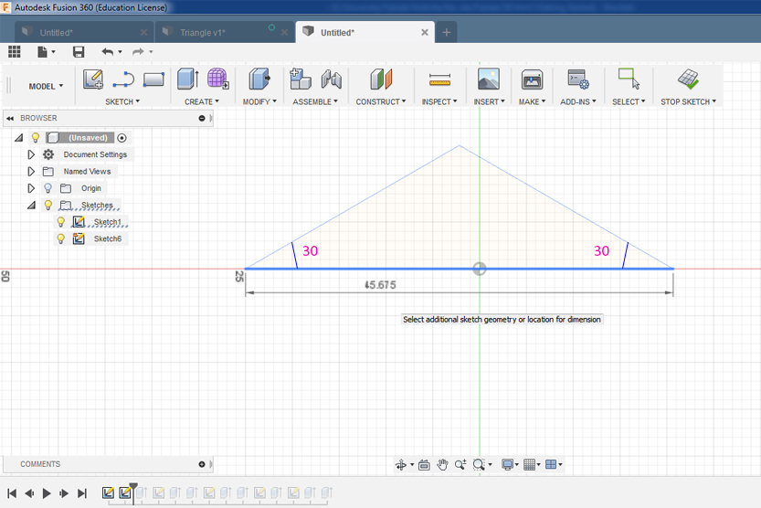
Then you have to extrude it. For that go to Create/Extrude.
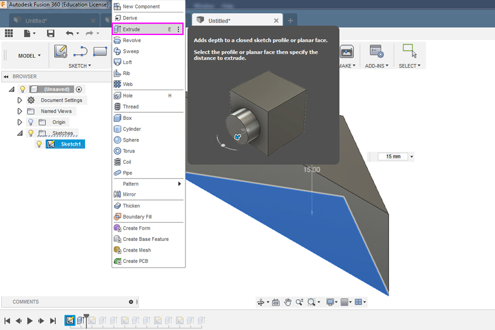
Select object you want to extrude and then put the value how big you want to make your shape.
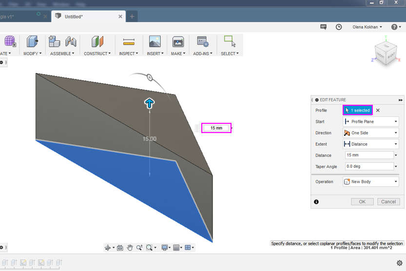
To save your parameters and use it all the same for all other objects you can go to Modify/Change Papameters. In a new window you can set all paramenters you will need, give each of it a name and a value. I used 3 parameter: Tolerance, Size of exetrusion and Circle diameter for joints.
If you want to connect you shapes with joints you have remember that female joint (hole) should be bigger than male. It caused because 3D printing is additive manufacturing.
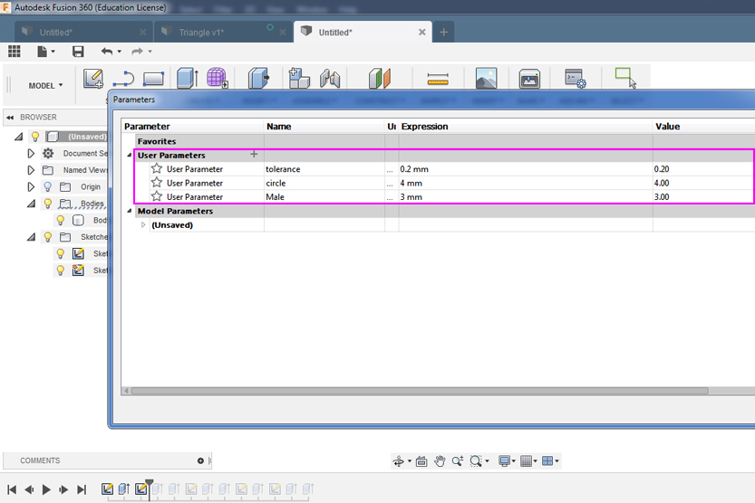
2
Next step is making sketches of joints. I placed my joints in th middle of surface. For that I used construction lines to define the middle. For the female joints you have to apply offset parameter.
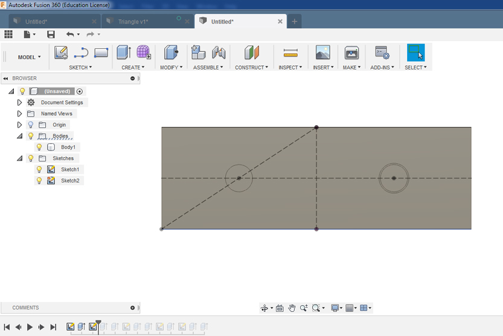
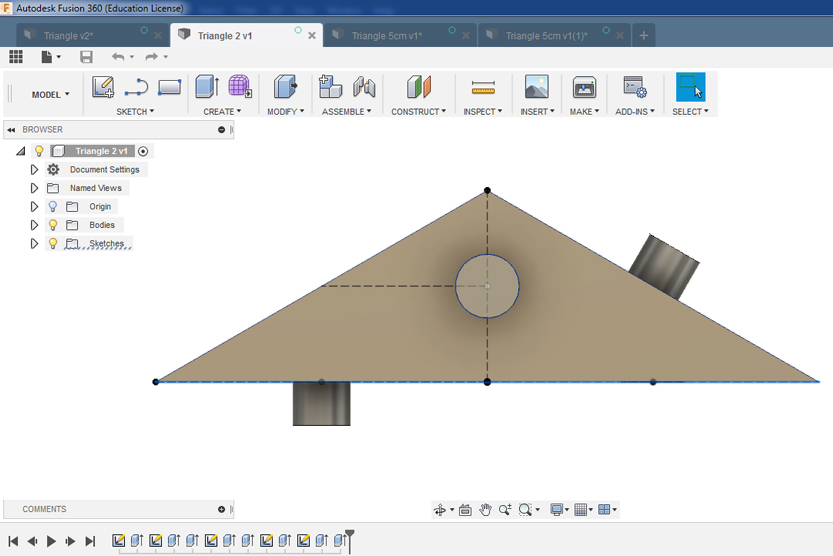
For the female joints you have to apply Offset (Sketch/Offset).
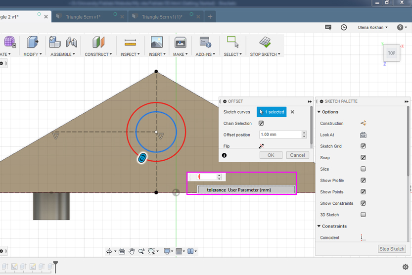
3
For exctrusion go Create/Extrude. To create male joint at first select the circle and then type in the parameter window the name of my previously safed parameter.
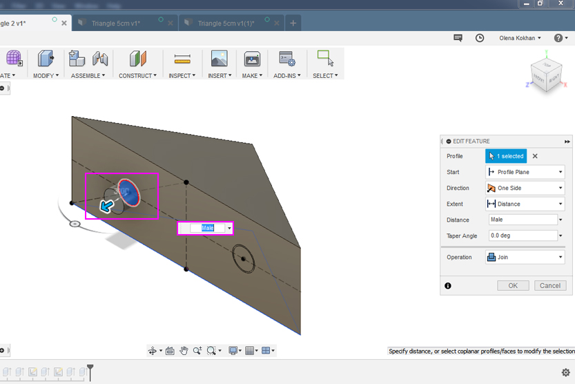
To create female joint at first select the circle and then type in the parameter window: minus the name of parameter minus tolerance. Female part should be bigger then male that is why you have to apply tolerance for its width (in step 2) and depth (now).
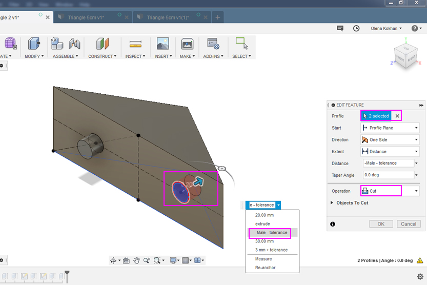
4
When shape is ready, save it as TLS.
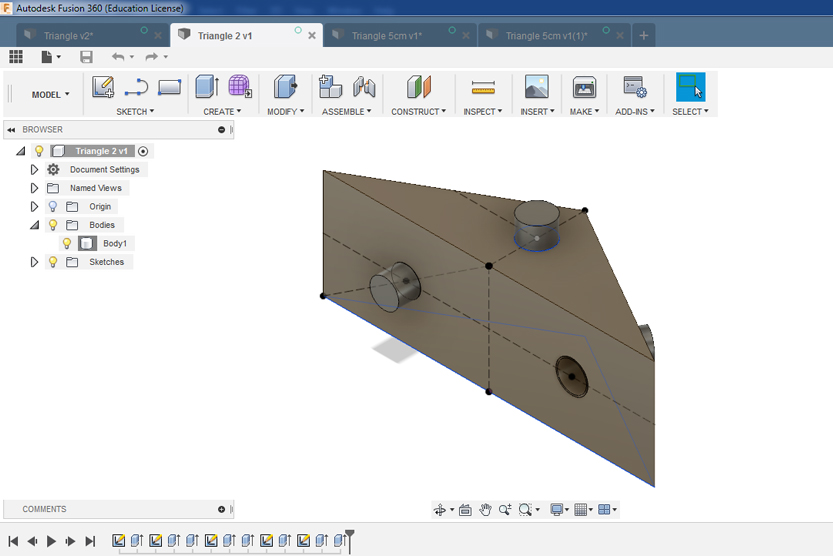
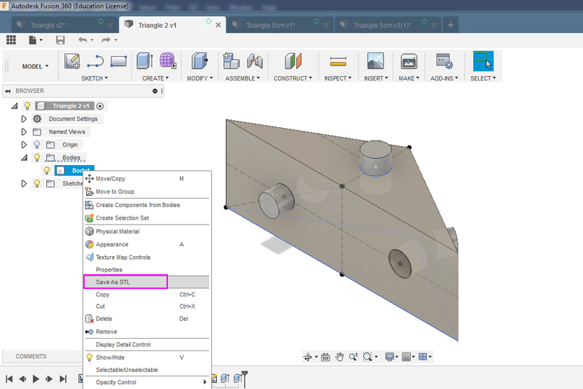
5
Now open Cura software. In this program you will prepare your file for printing in the Ultimaker 3D Printer. Notice that you have to use the same edition of Cura as your 3D printers. I used 2+.
Place your object through Open the file. If you want to rotate or move your object use tool bar under open file icon.
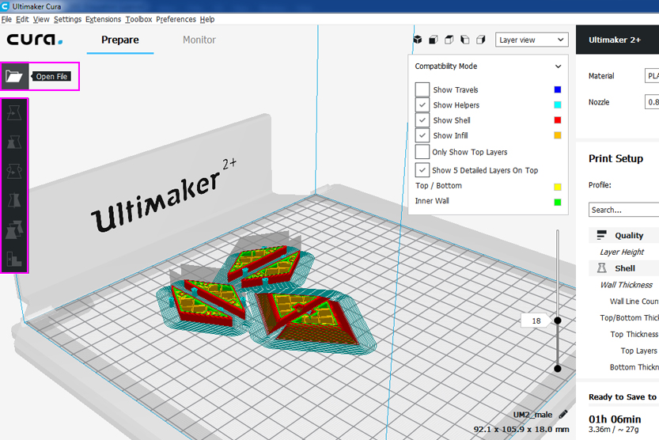
Now you have to change settings for printing on the settings pannel on the rihgt side of your screen. At first secect size of nasal of your printer and then all other settings.
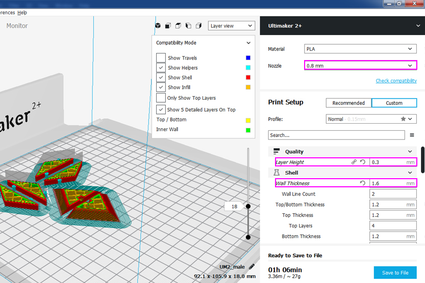
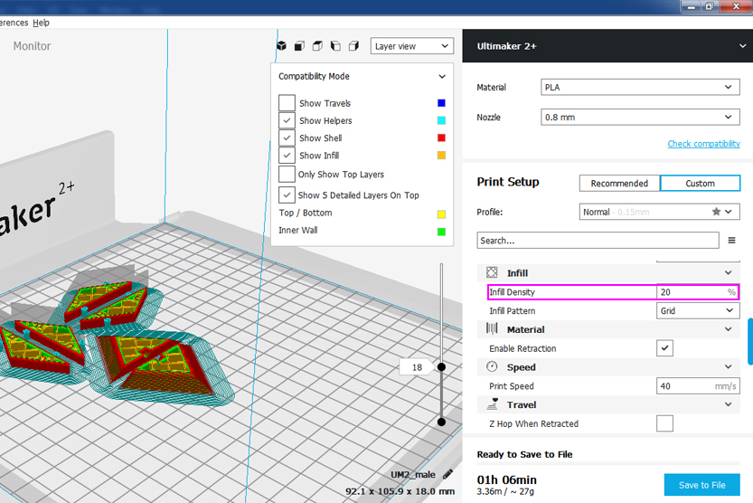
In the right corner you can also check amount of time you will need to print your objects. It will change depending on the settings you are going to use.
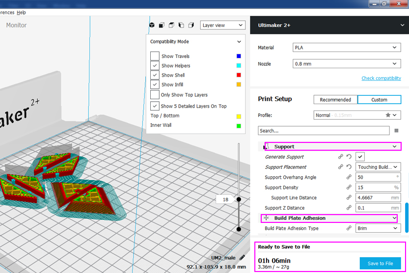
6
Final results.
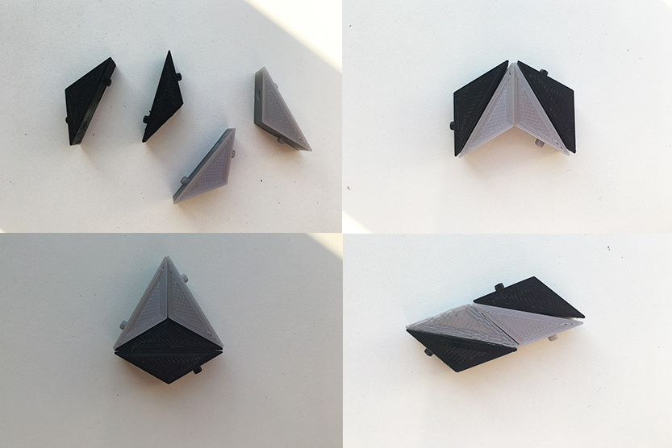
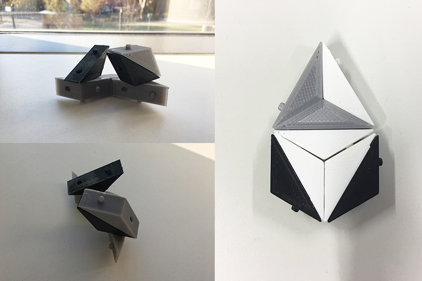